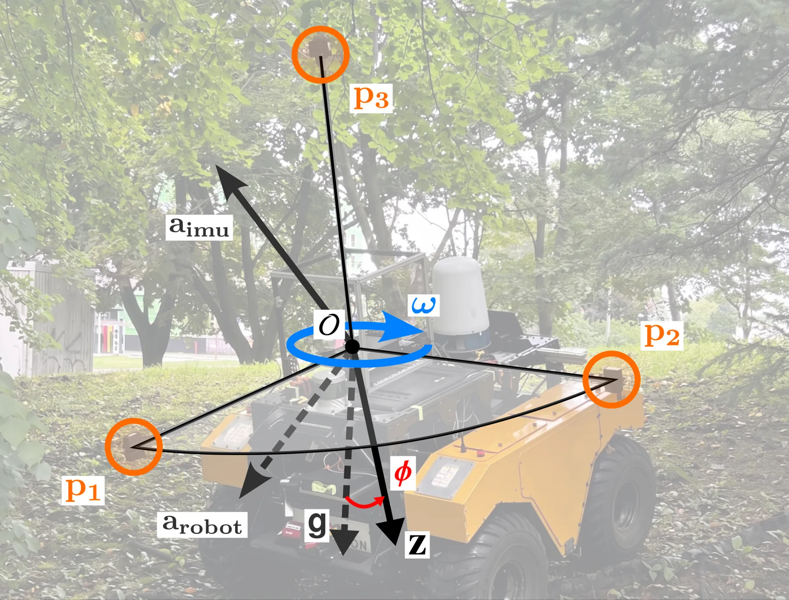
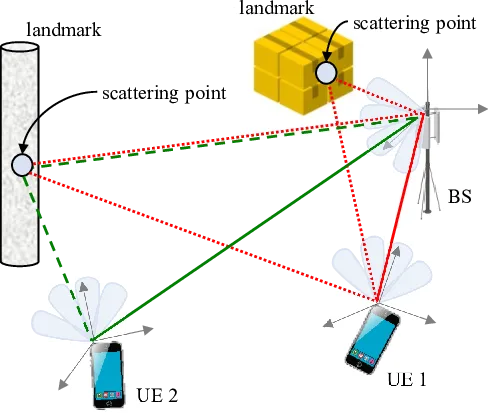

新论文 · 日期 2026-11-16 · score 8.4 · A层 · Robotic Foundation Models / VLA · cs.RO
内容级别：半海报
作者：Hongyu Ma, Hairong Qu, Shiqi Zhao, Yongsong Yang
评分 8.4/10
手部运动重建立体鱼眼视觉惯性 SLAM米制尺度策略学习蒸馏
一句话工作总结：一句话：用立体鱼眼 + IMU 把「手在哪、手指怎么动」直接解到世界系，再把这套标注蒸馏成能跑 171 FPS 的因果模型去带遥操作和策略学习。
人手操作数据是训练灵巧机器人最便宜的动作监督，但要在野外低成本、大规模地拿到「米制尺度 + 世界坐标系」的 3D 手部运动很困难。WinDEX 用一副立体鱼眼加 IMU 的采集设备 CyberCap，把几何–时序优化与视觉惯性 SLAM 结合起来：优化把 MANO 手模型拟合到人工复核的 2D 关键点，SLAM 给相机轨迹，两者复合得到重力对齐世界系下的手腕轨迹与手指关节角。网络端 WinDEX-Net 原生处理鱼…
Human manipulation data are widely used to train robots for human-like dexterity. However, low-cost, large-scale collection in the wild remains challenging. Existing methods remain limited in geometrically gro…

新论文 · 日期 2026-11-18 · score 8.0 · A层 · Robust State Estimation / Uncertainty · cs.RO
内容级别：半海报
作者：William Dubois, Nicolas Lauzon, Johann Laconte, François Pomerleau
评分 8/10
重力估计气压计可观测性退化环境状态估计传感器冗余
一句话工作总结：一句话：不靠加速度计，改用一排气压计测出的相对高程把重力方向直接解出来，与机器人怎么动无关。
移动机器人常把重力向量当作 SLAM 的全局约束，但主流做法是用 IMU 间接观测：加速度计里混着本体加速度，机器人一加速重力就估不准。这篇改用气压计阵列直接观测重力方向：N 个气压计给出相对高程差，与它们在机体系里的位置构成线性方程 z = Pg，非共面且 N≥4 时可直接解出重力单位向量。作者给出可观测性分析（N=3 时解集是一条直线与单位球的交，只剩符号二义）、估计协方差的闭式表达式与阵列几何设计准则，并用…
While gravity is often used in mobile robotics as a global constraint for Simultaneous Localization and Mapping (SLAM) algorithms, most estimation methods rely on indirect observation of the gravity vector. In…

新论文 · 日期 2026-11-16 · score 7.6 · A层 · Robust State Estimation / Uncertainty · eess.SP
内容级别：半海报
作者：Radovan Juran, Ossi Kaltiokallio, Julia Equi, Jukka Talvitie
评分 7.6/10
协作 SLAM无线定位后验 Cramér–Rao 界信息共享6G ISAC不确定性
一句话工作总结：一句话：把「多车共享蜂窝量测能省多少定位误差」写成一个可算的下界，并指出哪里开始收益饱和。
面向 6G 通感一体化（ISAC），这篇研究密集车联环境下协作式无线 SLAM 的性能极限。设定是多个用户设备（UE）各自状态未知、环境地标状态也未知，用蜂窝无线量测（时延、离开角、到达角）联合估计。作者首次给出集中式多 UE 无线 SLAM 的后验 Cramér–Rao 界（PCRB），显式刻画 UE 数量、几何构型与「不同 UE 观测不同地标」的能力差异；据此分析信息共享随 UE 密度的缩放、指出收益递减区间，…
This paper studies the fundamental performance limits of radio-based collaborative simultaneous localization and mapping (C-SLAM) in dense vehicular environments towards the 6G integrated sensing and communica…
新论文 · 日期 2026-11-17 · score 6.6 · A-层 · Real-time / GPU Robotics Systems · cs.RO, cs.CV, eess.SY
内容级别：简报式摘要
作者：Aria Dadnavi, Matin Jamshidi, Kian Khatibi, Shahriar Karimi Makhsous
评分 6.6/10
移动操作Jetson Orin NX麦克纳姆轮工程报告边缘部署
一句话工作总结：一句话：一个学生队的工业移动操作整机方案书，看点在边缘算力、自制电控与整机集成清单。
这是 Shahid Beheshti 大学电气工程系机器人实验室 Auriga 队的整机技术报告，介绍面向工业重复性/危险性任务的 @Work 移动操作平台：四轮麦克纳姆全向底盘、5 自由度机械臂加 3D 打印夹爪，自制 ESP32 电控板与 NVIDIA Jetson Orin NX 上位机，覆盖机械设计、电气、感知与任务流程。25 页、22 图、4 表，属工程记录而非方法论文，没有提出新算法，也没有统一的定量对…
This paper presents the design and implementation of Auriga Robotics' mobile manipulator robot, developed at the Robotics and Intelligent Automation Laboratory, Department of Electrical Engineering, Shahid Beh…
新论文 · 日期 2026-11-19 · score 7.0 · C层 · 纯 GNSS/INS / PPP-AR · cs.CR, eess.SP
内容级别：简报式摘要
作者：Minseok Park, Joon Soo Yoo
评分 7/10
GNSS 欺骗UAV 集群完整性监测似然比检验故障检测
一句话工作总结：一句话：整体平移能骗过队形检查，但骗不过「不同位置看到同一发射机的角度差」。
UAV 集群常用「编队一致性」检测 GNSS 欺骗：把各机报告位置与已知队形比对。保编队攻击（如 GNSS-WASP）用每颗卫星一个、位于几公里外的发射机整体平移整个集群而保持队形，从而绕过这种检测。这篇指出攻击仍在位置层之下留痕：发射机靠近时各机看到它的来向略有差异，这种视差会让信号到达时间在 90 m 编队上产生 20–40 cm 的弯曲（5 km 外发射机），与攻击者施加的任何延迟无关。作者据此提出似然比检验…
Swarms of unmanned aerial vehicles (UAVs) detect Global Navigation Satellite System (GNSS) spoofing by checking the drones' reported positions against their known formation. Formation-preserving spoofing evade…